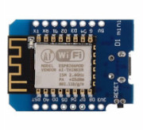
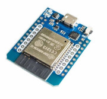
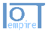

esp8266 oder esp32
Beides sind preisgünstige Mikrocontroller mit integriertem Wi-Fi, die häufig in Heimautomationsprojekten, IoT-Geräten und anderen Elektronikprojekten verwendet werden.
esp8266 oder esp32
Beides sind preisgünstige Mikrocontroller mit integriertem Wi-Fi, die häufig in Heimautomationsprojekten, IoT-Geräten und anderen Elektronikprojekten verwendet werden.
… und was man denn da so alles braucht:
Hier gibt’s erst mal einen Überblick, Beschreibungen und Einzelheiten folgen.
esp8266
esp32
hier findet man die Anleitung, wie man das einrichtet, Anwendungen und Beispiele

Ich verwende diese Software zum Steuern im Heimbereich und bei den Lego-Modellen.
Autor: Ulrich Norbisrath
Für die Lego-Projekte steuere ich LEDs, LED-Strips oder Motoren. (Einzelheiten dann bei den Projekten)
Bei meinen Home-Automation Projekten verwende ich Sensoren wie Bewegungsmelder, Helligkeitssensoren, Schalter, Füllstandsmesser, Feuchtigkeitssensoren
Node-RED ist ein Programmierwerkzeug für die Verbindung von Hardwaregeräten, APIs und Online-Diensten im Bereich der Heimautomatisierung. Es verwendet ein benutzerfreundliches, grafisches Interface, um Workflows zu erstellen, die als "Flows" bezeichnet werden. Node-RED ermöglicht es, verschiedene Geräte und Dienste einfach per Drag-and-Drop zu verknüpfen. Man kann damit beispielsweise Lichter automatisch steuern, Heizungssysteme regeln, Sicherheitssysteme integrieren oder Wetterdaten in Echtzeit überwachen. Alles erfolgt durch die Verbindung verschiedener Blöcke oder "Nodes", die jeweils kleine, spezifische Funktionen ausführen, wie das Senden von Befehlen, das Empfangen von Sensordaten oder das Ausführen von Zeitplänen
IoTempower ist ein Rahmenwerk und eine Umgebung, die es jedem ermöglichen soll, das Internet der Dinge (IoT) zu erkunden und dafür zu entwickeln – dazu zählen Bastler, Macher, Programmierer, Hobbyisten, Studenten, Künstler und Fachleute gleichermaßen. Der Schwerpunkt liegt auf der Bildung, und das Framework ist speziell dafür gedacht, Kurse im Bereich Internet der Dinge (IoT) und Hausautomatisierung zu unterstützen.